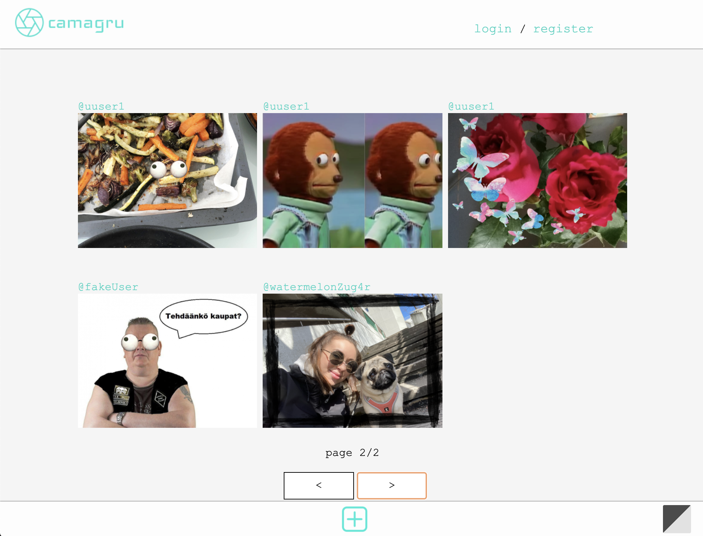

Here I'll tell you a bit about the projects I've done during my studies in Hive Helsinki.
At the moment I have some school projects to show you and I'll add some own projects here too when the time comes.
Most of my school projects are done with C. But currently I'm doing web projects with HTML, CSS , Javascript, PHP etc.
If you want to know more about Hive, go check
here.
All the code, including my webpages, you can see in my Github.
Languages: HTML, CSS, Javascript, PHP, AJAX, SQL
Code: github.com/esalorin/camagru
In this projects I created, in PHP, a small Instagram-like site that enables users to make and share photo edits. I will thus implement, with bare hands (frameworks are forbidden), basic functionalities you find on most sites with a user database. Frontend is done in HTML, CSS and Javascript. Backend is done in PHP and SQL with PDO. I will also use Ajax to update the content of specific areas. You can find pictures about the app in my github.
Languages: HTML, CSS, PHP
Code: github.com/esalorin/rush00-onlineshop
In this group project we created a mini online shop. User can register, login and delete his account. You can organize products by category and add products to basket. To be able to validate an order user has to be logged in. In admin section all the orders can be seen and products and categories can be modified.
Language: C
Code: github.com/esalorin/ft_select
The goal of this project is to get familar with termcaps library and to create a user interface for a program launched on the terminal.
You can move through the list of arguments using arrows, made selections with space key and erase
the element from the list by pressing backspace or delete. When the selections are made you can
send the choises to the program with return key. You can exit from the selection list by perssing esc.
Language: C
Code: github.com/esalorin/minishell
In this project I took my first step creating a shell. A mini-shell is capable of reading and evaluating simple user commands.
Reading will involve
lexical analysis and parsing of the command. Evaluation will involve searching for the corresponding binary on the machine and execute it,
or execute the relevant code in the case of a “built-in” command in the shell.
Builtins I have implemented are echo, cd, setenv,
unsetenv, env and exit. The command lines are simple, no pipes, no redirections or any other advanced functions.
Language: C
Code: github.com/esalorin/ft_ls
In this project I had opportunity to code myself one of the most used command: ls. During this project I learned more about the filesystem and how the files and directories are sorted.
Language: C
Code: github.com/esalorin/ft_printf
In ft_printf I re-coded my own printf function. I'll be able to use my ft_printf in all future projects. I had to manage converions c, s, p, different conversions for printing integers; d, i, o, u, x, X and float f. You can use lenght options; hh, h, l and ll and flags; #0-+ and space. Every conversion can be printed with the minimum field-width and/or precision.
Language: C
Code: github.com/esalorin/fillit
This project was my first team project. Together we had to create a program, similar to Tetris, which will arrange given pieces and determine the smallest square that can fit all of them. Pieces are given in a file, in 4x4 blocks, separated by newline.
Language: C
Code: github.com/esalorin/get_next_line
In this project I re-coded getnextline function. Usefull function ecpecially when you want to read input or file line by line.
Language: C
Code: github.com/esalorin/libft
In this project I created my own C library; libft.a. I re-coded several functions of the standard C library and other utility functions as well.